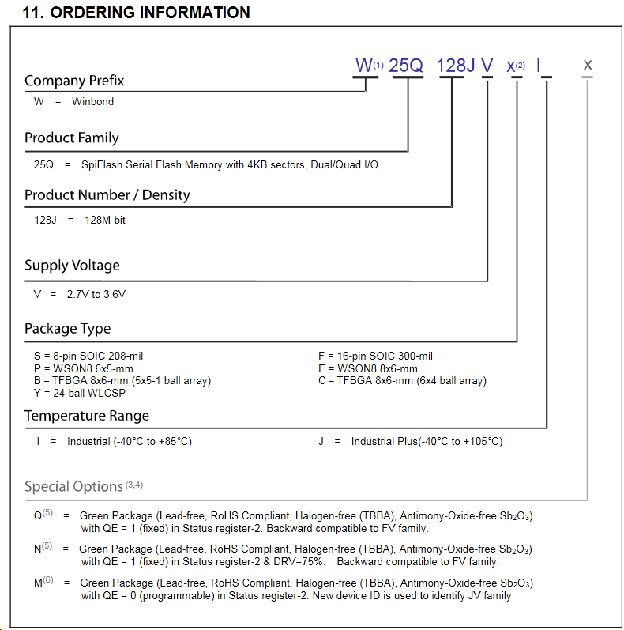

BW25Q32/64/126/256/etc
Буквы BV, FV и JV в маркировке после цифры 128 обозначают рабочие параметры, в частности - это всё одинаковые флешки на 16 мб, но JV может работать на большей частоте, чем FV и уж тем более BV. Следует это учитывать при выборе, так как теоретически, при замене, можно поставить более быструю чем была, но не наоборот., т.е. JV заменить на FV, или FV на BV может не получиться. Буква Q в конце маркировки указывает на Quad режим работы. Смотрите даташиты, там все указано.
